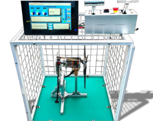

AeroBOT-D1 无人机电推进变距测试平台
面向无人机动力系统教学、科研与实验测试的一体化电推进性能测试平台。

产品概述
AeroBOT-D1 无人机电推进变距测试平台面向无人机动力系统实验教学、科研测试与性能验证场景，采用 AeroBOT-D1 推进电机、三叶变距桨，并配置 6S 电压电调，可对无人机电推进系统的关键性能参数进行综合测试。
平台具备无线数据采集、远程控制和图形化参数显示功能，可实现推力、扭矩、转速、电压、电流及温度等多参数同步监测，为无人机动力系统设计、性能评估和实验教学提供可靠数据支撑。
核心功能
支持推力测量：通过高精度推力传感器，在不同工况下准确测定推进系统推力输出，帮助分析无人机动力系统的基础性能表现。
支持扭矩测量：可测量电机输出轴扭矩，用于分析电机效率、负载特性及传动系统工作状态，为电机控制策略优化提供依据。
支持转速测试：实时监测电机转速变化，并可结合不同输入电压、电流和负载条件，分析转速与动力参数之间的关系。
支持电压与电流监测：实时采集电推进系统输入电压和电流，便于判断系统是否处于安全、稳定的运行范围，及时发现潜在电气异常。
产品特点
多参数同步采集，支持电压、电流、拉力、扭矩、转速、温度等关键数据一站式监测。
配备可视化数据看板，通过图表曲线直观呈现动力系统性能变化趋势。
支持无线远程传输与控制，减少近距离操作风险，提升实验测试安全性。
适用于无人机动力系统教学实验、科研测试、性能对比和工程验证。
基本配置参数
3D 演示
教学价值
AeroBOT-D1 可支撑无人机动力系统、电机控制、电推进测试、传感器数据采集、电调控制、动力匹配与实验数据分析等课程内容。
学生可通过平台直观理解电压、电流、转速、推力、扭矩等参数之间的关系，掌握无人机电推进系统的性能测试方法和工程分析流程。
适用场景
适用于高校及职业院校无人机专业、航空动力相关课程、机器人与智能装备专业、自动化控制专业及工程实践教学场景。
也可用于无人机动力实验室建设、电推进系统科研测试、竞赛训练、动力系统选型验证及无人机整机设计前期实验分析。